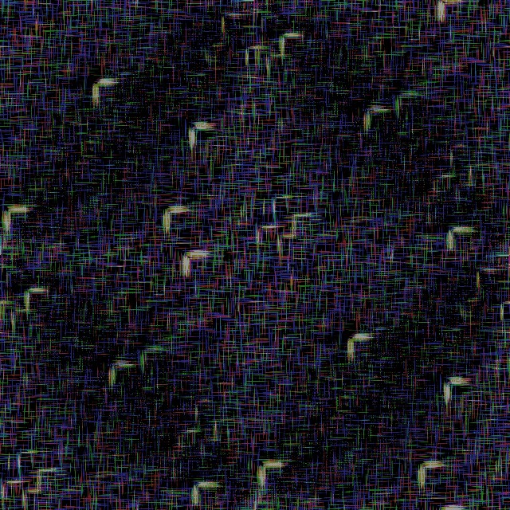

<a-scene id="a-frame-container" inspector>
  <a-assets timeout="3000">
    <a-asset-item id="passion_ball" src="scene.gltf"></a-asset-item>
    <a-asset-item id="seahorse" src="seahorse.obj"></a-asset-item>


    <!-- question: can we programmatically update a mixin and trigger updates on the compoenents that use it? -->
    <a-mixin id="house"
             material="transparent: true; opacity: 0.9;"
             light="distance: 120; intensity: 1; type: point"
             shadow></a-mixin>
    <!-- elements with this mixin still need to specify light color and other geometry / shape properties -->
    
    

    <a-mixin id="title"
             position="0 2.5 0"
             scale="1.5 1.5 1.5"></a-mixin>
    <a-mixin id="members"
             position="0 2.1 0"></a-mixin>

    <a-mixin id="score"
             position="0 7 -2"
             width="15"
             align="center">

    <!-- Texture samples -->
    
    
    
    
    
    
    
    


  </a-assets>

  <!-- The world -->
  <a-entity light="type: ambient; intensity: 0.5"></a-entity>
  <a-sky src="#stars"></a-sky>
  <a-plane src="#groundTexture" rotation="-90 0 0" width="30" height="30"></a-plane>


  <!-- The Glass Bead -->
  <!-- Note: color of material and color of light are completely independent -->
  <a-sphere position="0 3 0"
            geometry="primitive: sphere; radius: 1.5"
            material="transparent: true; opacity: 0.25; color: #FFF; metalness: .5"
            light="color: #fff; distance: 120; intensity: 0.0; type: point"></a-sphere>

  <!-- The camera is right in front of TheWoods -->
  <!-- The camera is right in front of TheWoods -->
  <a-entity rotation="0 {{([0, 1, 2] | random) * 120}} 0">
    <a-entity position="0 0 -5">
      <a-camera></a-camera>
      <a-entity laser-controls="hand: right"></a-entity>
      <!-- a-entity super-hands hand-controls="right"></a-entity -->
    </a-entity>
  </a>

  {% include "the-woods.njk.html" %}

  <!-- Reef Corps -->

  {% include "reef-structure.njk.html" %}

      <a-entity mixin="score"
                text="value: 3,000; wrapCount: 5; color: magenta" ></a-entity>

      {% include "brillish.njk" %}
    </a-entity>
  </a-entity>
<a-entity gltf-model="#passion_ball" position="0 5 0" scale=".03 .03 .03">
  <a-animation attribute="rotation" dur="4000"
         fill="forwards"
         to="0 180 0"
         repeat="indefinite"></a-animation>
</a-entity>
  
{% include "fruit-paradise.njk.html" %}

  </a-scene>
